人脸识别模型 论文研读+实验分析
By –B–18–杨佳智
Ⅰ. Content
- 论文研读
DeepFace: Closing the Gap to Human-Level Performance in Face Verification
FaceNet: A Unified Embedding for Face Recognition and Clustering
Deep Learning Face Representation from Predicting 10,000 Classes
A Discriminative Feature Learning Approach for Deep Face Recognition
SphereFace: Deep Hypersphere Embedding for Face Recognition
- 实验分析 （评测 GitHub 上公开的人脸识别模型）
FaceNet (Based on Paper2: FaceNet)
DeepID (Based on Paper3)
SphereFace (Based on Paper 5: SphereFace)
Ⅱ. 论文研读
Paper 1: DeepFace: Closing the Gap to Human-Level Performance in Face Verification
研读分析：
目前的人脸识别流程通常包括四个阶段，$detect\Rightarrow align \Rightarrow represent \Rightarrow classify$ 。这篇文章主要通过以下两个方面改进当时已有的人脸识别系统：
在脸部对齐 $(align)$ 的阶段通过建立脸部的 3D 模型以获得更好的对齐效果。选取(g)阶段的图像作为人脸正面图像输入神经网络。
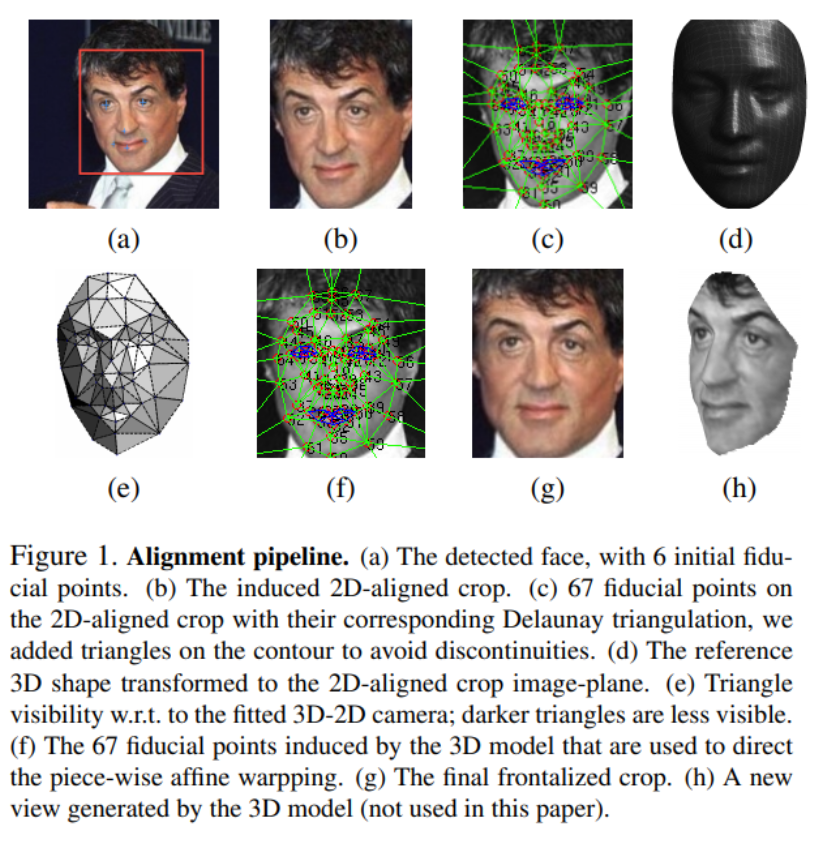
在特征选择及表达 $(represent)$ 的阶段通过构建深度神经网络提取脸部特征。
当时大多数的人脸识别系统都通过复杂的特征选取流程完成人脸识别任务，但是这些特征对光照，表情，年龄等因素较为敏感，泛化能力不强，在处理无限制的人脸图像时效果较差。同时系统还通常结合人工处理的特征以提高其性能，但是大多数的人脸图像无特定限制，也缺少人工处理。因此本论文使用 DNN，让系统自己在人脸图像中学习泛化能力强的特征，减少人工干预。
网络输入为经对齐处理后的人脸正面图像，之后分别经过卷积层-池化层-卷积层处理，然后是三个局部连接层和全连接。各层网络的目的：
| 网络层级 | 目的 | 说明 |
|---|---|---|
| 卷积层-池化层-卷积层 | 提取底层特征，如：边缘和纹理。 | 池化层可能会造成一定的信息损失，因此本论文中只采用了一个池化层 |
| 三层局部连接层 | 获取较为高层的特征。 | 面部的不同区域的特征分布情况不同，因此对于不同区域采用不同的权重进行学习。 |
| 两层全连接层 | 找到面部不同特征之间的整体整体联系，并得到最终的特征向量。 | 近 95%的参数来自局部连接层和全连接层。 |
| SoftMax 层 | 根据最终获取的面部特征对该人脸进行归类。 | 该人脸图像属于类别 k 的概率： $p_k=exp(o_k)/\sum_hexp(o_h)$。 |
总结思考：
该论文最重要的贡献是首次在人脸识别问题上较为有效地使用了 DNN 模型，大幅提高了人脸识别系统的准确率。
通过 3D 建模进行人脸对齐，降低了图像中人脸的不同方位，角度所带来的影响。
该文中仍然有可改进的地方，比如该文中损失函数采用的 cross-entropy(交叉熵)，而通过之后的论文阅读可以发现，将损失函数改进为center-loss, triplet-loss, 或者其他 angular-loss(eg: sphere loss)，能更好的实现类间离散，类内聚集，使得人脸识别模型准确率更好。
Paper 2: FaceNet: A Unified Embedding for Face Recognition and Clustering
研读分析：
通过 FaceNet 将人脸图像映射到紧密的欧式空间中，欧式空间中的距离即对应着原始图像相似度的度量： 同一个人的人脸图像映射到欧式空间后距离较小，而不同人的图像映射后距离较大。经过这种映射处理后，关于人脸图像的以下问题便可以作进一步的简化：
a. 人脸验证 ($face\ verification$) $\Rightarrow$ 判断两点距离是否达到不同类别的阈值。
b. 人脸识别($face\ recognition$) $\Rightarrow$ k-NN 算法进行分类。
c. 人脸图像聚类($face \ clustering$) $\Rightarrow$ k-means 算法或者 agglomerative 聚类算法。
本文的核心贡献是设计特殊的损失函数 (Triplet Loss)，使得人脸图像经过映射后满足上述要求：同一人的人脸映射后距离较小，不同人的人脸映射后距离较大，同时存在一个距离的阈值用于区分两个图像是否属于同一人（距离小于阈值–图像属于同一人，距离大于阈值–图像属于不同的人）。
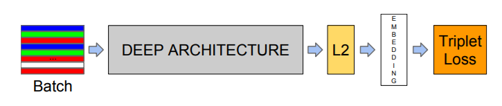 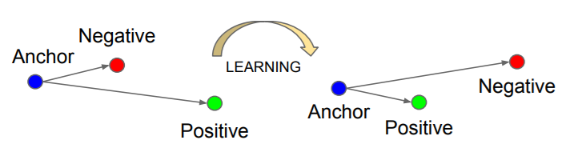数学表示： 对于图像映射的表示: $image \ (x) \xrightarrow {embedding} feature \ vector ( f(x)) ,\ ||f(x)||_2 =1$ 。给定任一个人的图像 $x_i^a(anchor)$, 同一个人的其他图像 $x_i^p(positive)$, 其他人的图像 $x_i^n(negative)$。
我们希望其满足：$||f(x_i^a)-f(x_i^p)||_2^2+\alpha<||f(x_i^a)-f(x_i^n)||_2^2 \ \ \ \ \ (1)$ ，$\alpha$ 表示$margin$, 用于分隔同类图像与不同类图像。因此，损失函数（Triplet Loss）可以表示为：
$$
\sum_i^N[\ ||f(x_i^a)-f(x_i^p)||_2^2-||f(x_i^a)-f(x_i^n)||2^2+\alpha\ ]{+} \ \ \ \ \ \ (2)
$$
通过最小化 Triplet Loss，便可以更新网络中的参数。但是目前存在的问题是，从一个大小为 N 的数据集中选取三元组并计算，将会产生大量的计算消耗。并且其中部分三元组以及满足了(1)式的要求，会直接通过网络而不会使得网络权重产生更新，因此我们应该采用特殊的方法选择合适的三元组。
本文中采用的方法是：每一次计算 Loss 时，在当前的 mini-batch 中选择 hard positive $(argmax_{x_i^p}||f(x_i^a)-f(x_i^p)||2^2)$ 和 hard negative $(argmin{x_i^n}||f(x_i^a)-f(x_i^n)||_2^2)$ 的样例，用这些样例以及当前的 $x_i^a$ 组成的三元组进行计算 。这样便有效减少了无用的三元组的计算。
总结思考：
- 该模型将人脸图像映射到欧式空间中，构建三元组并计算 Triplet Loss。Triplet Loss 有效的减少了同一个人的人脸图像经映射后的距离，增加了不同人的人脸图像的距离。使得映射后的欧式空间中满足类内聚集，类间离散的特点，有效的增进了该模型进行人脸验证，识别，聚类等任务的准确度。
- 该模型的缺点：三元组的引入大幅增加了计算消耗，根据原文的说法，该模型在 CPU 上的训练时间为 1000-2000 小时，时间复杂度过高，仍有改进的空间。
Paper 3: Deep Learning Face Representation from Predicting 10,000 Classes
研读分析：
本文的主要贡献是，设计 CNN 以提取面部不同位置的高层特征表达。之前的神经网络对于某一图像输入都只针对这张图像本身进行特征提取；而在本文的模型中，为了提取更加完整的特征，作者将同一张图片按照 10 个不同的面部区域，3 种不同的规模大小，RGB 或者是灰度通道分别送入 60 个神经网络，将各网络得到的特征向量进行拼接，最终得到 19200(160 x 2 x 60)维的表示该人脸图像的特征向量。该特征向量能更加完备的反映原始人脸图像。
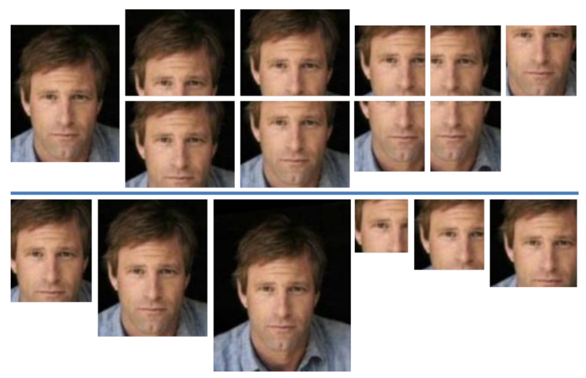如上图所示，上半部分表示人脸的 10 个不同的区域，下半部分为两个 patch 的 3 种不同规模大小。
网络配置如同下图所示：
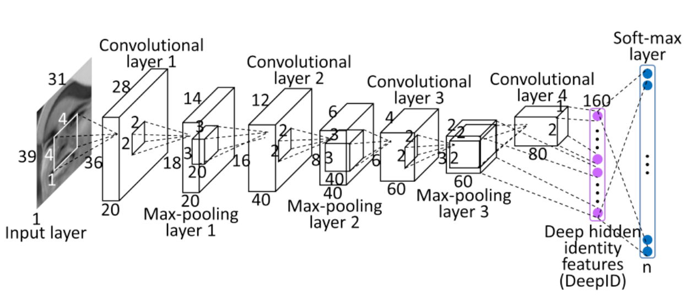其中前三个卷积-池化层是为了逐层获取更高级更抽象的特征，最后的特征提取层(最终特征称为 DeepID，将该层简称为 ID 层) 与第三个池化层以及第四个卷积层全连接，因此 ID 层能够处理两种不同规模的脸部特征。将 ID 层同时与第三个池化层以及第四个卷积层连接提高了模型的性能，因为图片经过了逐层的下采样，有一定的面部信息损失，如果只连接第四层，则面部信息损失较大；而同时连接第三个池化层可以减少信息缺失带来的影响。
总结思考：
- 该模型将每个人脸图像，都按照不同的面部位置，不同的规模大小，以及不同的颜色通道转化为不同的输入，经过多个 CNN 处理后，将各个得到的特征进行拼接，最终得到高维的较完备的脸部特征。但是这种方法的缺点是时间成本太高，为了分析各部分特征，作者对上述不同的输入(共 60 种)训练了 60 个不同的 CNN 网络，这大大增加了计算成本，是需要改进的地方。
- 该模型对脸部对齐程度的要求不高(only requiring weakly aligned faces)。
- 该模型将最后的特征提取层与第四个卷积层和第三个池化层全连接，有效的减少了逐层下采样带来的信息损耗。这个设计可以算是这篇文章的一个创新点，之后的许多人脸识别模型都沿用了这一设计方式。在最早的 Paper1: DeepFace 中, 为了减小信息损失，其作者采用的方法是直接减少 maxpooling-layer 的使用，只在第一层使用了池化。我们可以考虑对比这两种不同的方案，以设计更高效的网络。
Paper 4: A Discriminative Feature Learning Approach for Deep Face Recognition
研读分析：
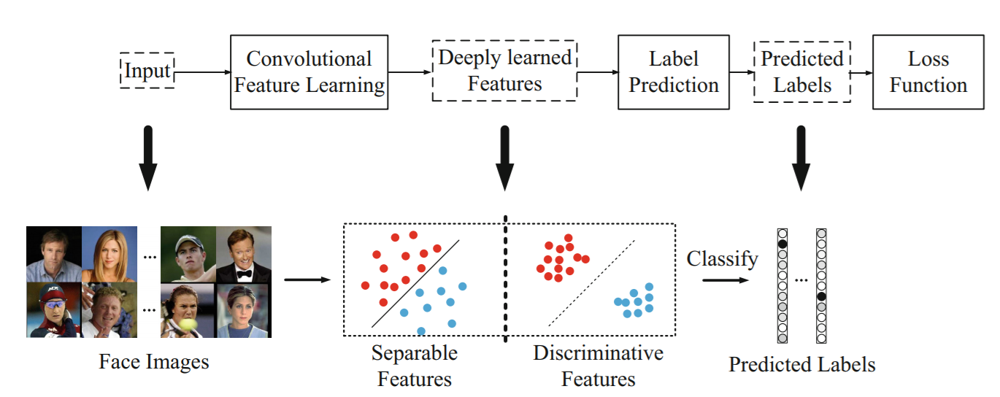当时大多数已有的人脸识别模型都是采用 softmax loss 作为损失函数，但是 softmax loss 只能使网络区分不同的特征 (encourage the separability of features)，但是无法增加特征的识别力(discriminative power)。discriminative power 对于人脸检验，判别不在训练集中的未知人脸的类别，以及人脸聚类问题都相当重要 。因此，本文设计了 center loss, 该损失函数能有效增强人脸图像特征的 discriminative power，即其能增加类间的离散程和类内的紧密程度。
与 triplet loss 的对比：Paper 2(FaceNet)中提到的 triplet loss 同样能增强特征的 discriminative power，但是 triplet loss 在网络中的计算量太大，选择合适的三元组的过程较为复杂，不利于实现 。因此本文中的 center loss 以其简易和轻量的特点占据一定的优势。
具体实现方法：
$$
L_c = \frac{1}{2}\sum_{i=1}^m||x_i-c_{y_i}||_2^2 \ \ \ \ \ \ \ \ \ \ \ (3)
$$
$c_{y_i}$表示类别${y_i}$的特征中心。$Lc$ 反映了类内的紧密程度，降低$Lc$即使得类内更加聚集。之后我们再将 center loss 与 softmax loss 相结合得到最终用于训练的损失函数:
$$
L = L_s+L_c =-\sum_{i=1}^mlog\frac{e^{W^T_{y_i}x_i+b_{y_i}}}{\sum_{j=1}^ne^{W_j^Tx_i+b_j}}+\frac{\lambda}{2}\sum_{i=1}^m||x_i-c_{y_i}||_2^2
$$
其中，控制$L_c$部分的系数$\lambda$ 的取值不同会导致得到的特征分布不同。通过选取适当的$\lambda$，我们可以得到较为理想的特征分布。
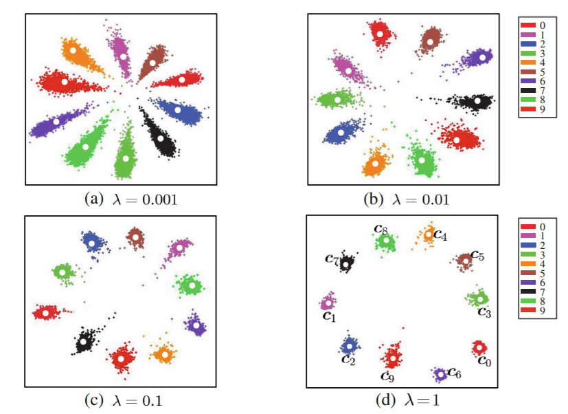算法流程如下：
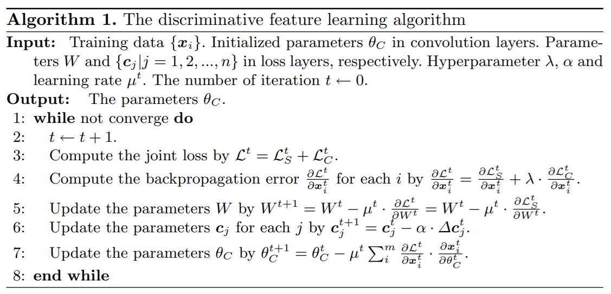网络设计如下：
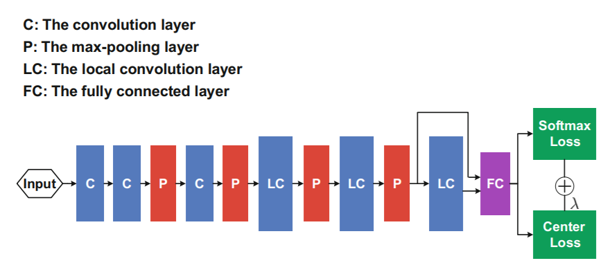总结思考：
其实本文的思路可以理解为：在原有的 softmax loss 的基础上增加一个惩罚项(即文中的(center loss)，该惩罚项控制类内的聚集程度。
center loss 中不同类别的特征中心不断迭代更新的思想与聚类算法 k-means 有一定的相似性。(后者是不断迭代更新每个子集的质心，再将各点划分到距离最近的质心所属的类别)。
center loss 的思想便于理解，并且实现简单，计算复杂度较低，其对应的 CNN 网络较为轻量。
Paper 5: SphereFace: Deep Hypersphere Embedding for Face Recognition
研读分析：
本文提出了一种 angular softmax loss – A-Softmax loss, 使得 CNN 能够学习与角度相关的有识别力的特征(angularly discriminative features)。通过应用该损失函数，人脸图像特征可以被映射到超球面上，这种映射可以使得不同类别与各决策面的距离越大，类内数据更为聚集，同时类间数据更加离散。这将更有利于人脸识别性能的提升。
同时通过设定参数 m，我们可以对类别间角度的分隔(angular margin)做量化分析。
数学表示：
对于一个二分类的例子，通过 softmax 计算得到$x\in c_1 $ 或者 $c_2$ 的概率分别是：
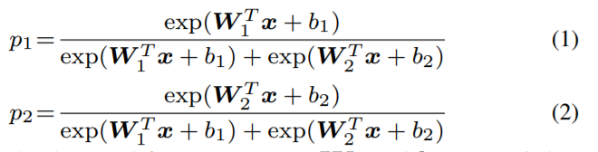 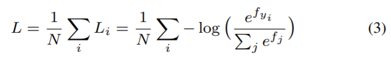 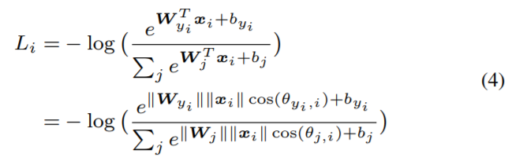 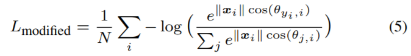 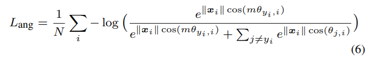 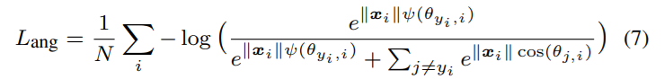分别应用 Original Softmax loss, modified Softmax loss, 以及 A-softmax loss 完成下图中两种数据点的分类，可以看到，应用 Original Softmax loss 的情况下，分界面周围仍然有大量错分的数据点。而使用 Modified Softmax loss 后，数据点的类别已经能相对正确的划分开，但是划分结果缺乏识别力(discriminative power)，即类间与类内数据点的区分程度不够。最后使用 A-softmax，可以看到类别间能被很好的间隔开，同时类内的各数据点分布也相对密集，这有利于提高识别，检测等操作的准确率。不同类别之间的分隔由参数 m 确定。
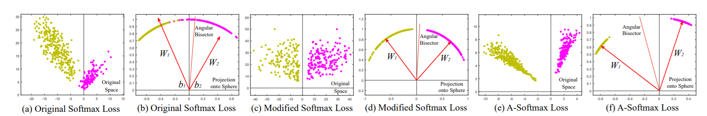下图是对 A-softmax loss 采用不同的 m，特征空间中不同类别特征的分布情况。由下图可见，m=4 时特征的识别力更强。
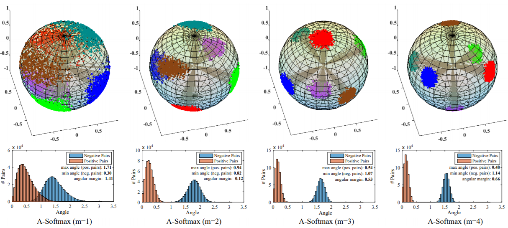总结思考：
这是首篇成功地在人脸识别模型中利用 angular margin 增强模型性能的文章。并且通过实验测试结果与可视化展示了 A-softmax loss 的有效性。
A-softmax loss 计算量小于 triplet loss, 且识别力比 center loss 更好，成为了当前常用的一种损失函数。之后的许多工作，eg: CosFace, ArcFace 等都是在本文核心思想的基础上开展的工作。
Ⅲ. 实验分析
- FaceNet
FaceNet 是基于 Paper 2: FaceNet 的开源人脸识别系统。FaceNet 给使用者提供了两个预训练的模型（在 Paper 2 的分析中提到，由于 triplet loss 的计算量太大，FaceNet 的训练时间很长–论文中的描述是 1000-2000 小时，因此我们选择直接采用官网上的预训练模型进行检测。）
这两个预训练模型分别是在 CASIA-WebFace 以及 VGGFace2 数据集上进行的训练。
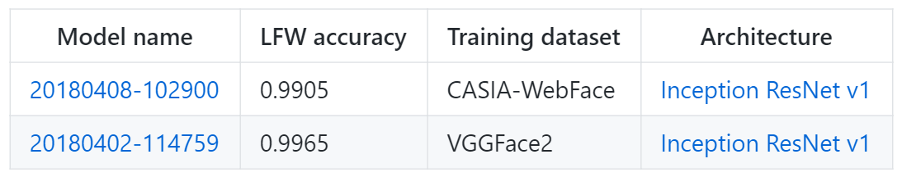我们使用预训练模型二并在 LFW 数据集上进行测试。首先使用提供的 align_dataset_mtcnn.py，对原始图片数据进行对齐，得到规范化后的数据集。然后运行 validate_on_lfw.py，对规范化后的数据集进行测试，得到结果如下：
| 指标 | 数值 |
|---|---|
| 准确率 (Accuracy) | 0.99650+-0.00252 |
| 误识率(FAR) | 0.001 |
| 等错误率(EER) | 0.04 |
- DeepID
基于 Paper 3: DeepID 进行设计开发，注：该库并非由原作者开发，而是复现效果较好的第三方库。
在文章中，作者为了增进模型识别准确率，人为的扩充了数据集。（CeleFace $\Rightarrow $CeleFace+ (含有 10177 个名人的 202599 张人脸图像)），由于原作者未公开这部分扩充的数据集，因此这个第三方库采用了其他数据集(Youtube face)进行模型的训练和测试。
首先运行 youtube_img_crop.py 对人脸图像进行剪裁，然后将图像向量化再送入网络，运行 deep_id_generate.py 得到所有图像的特征向量。最后运行 deep_class.py 对测试集中的人脸数据进行分类。最终的测试结果为：在 Youtube face 测试集部分的准确率为 **97.69%**。
- Sphereface
该系统包含人脸识别的整个流程(人脸检测，人脸对齐以及人脸识别)，该系统是在 CAISA-WebFace 上进行的模型预训练。我们可以使用预训练的模型在 LFW 数据集上进行测试 。
运行 face_detect.m 以及 face_align.m 将 LFW 中人脸图像数据进行检测以及对齐操作。之后执行 sphereface_train.sh 训练球面模型。最后运行 evaluation.m 得到准确率。最终的实验得到的准确率为**99.29%**。
补充： Sphereface 库还可以对视频中的人脸进行实时检测，如下所示（对不同的人脸用了不同颜色的框图进行区分）：
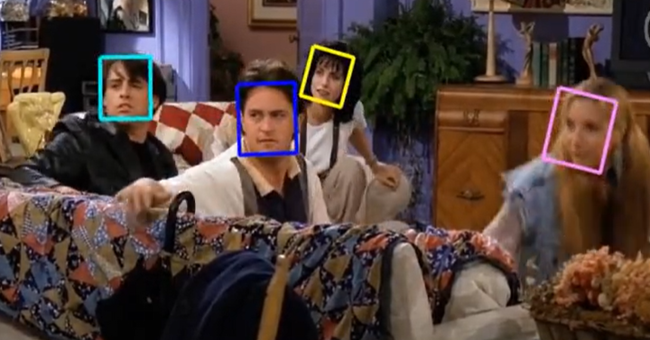